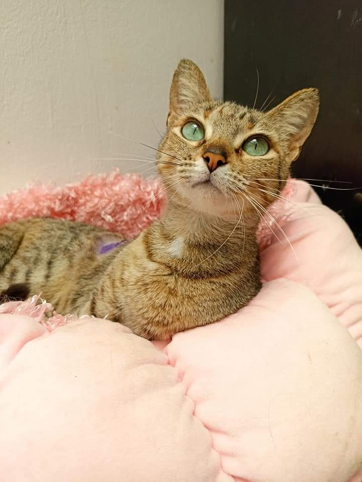
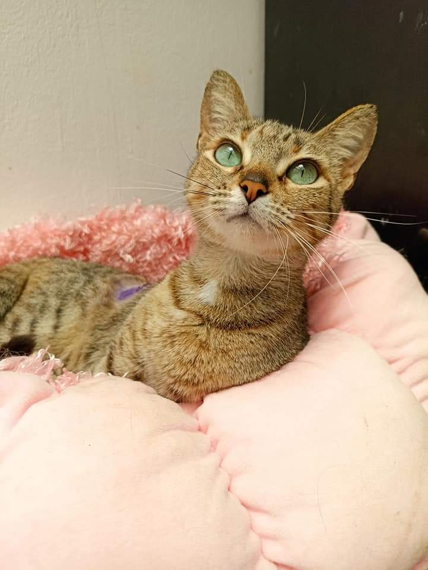

"AdopetConfia ha simplificado la adopción de mascotas y mejorado nuestras vidas con peludos compañeros".
10 de julio de 2023
"Donde comienza la historia de la amistad perfecta"


¡Estos animalitos buscan un compañero y ese podrías ser tú!


 


Descubre las historias de amor y gratitud de quienes encontraron a su
compañero perfecto. Sus testimonios son la mejor prueba de nuestro
compromiso con la felicidad de las mascotas y sus familias adoptivas.
Informacion para las personas que buscan adoptar una
mascota. Resuelve tus dudas
Conoce quiénes forman parte de este increible
proyecto


Te invitamos a colaborar con nosotros en la mejora continua
de AdopetConfia, contribuyendo a asegurar una experiencia
excepcional para cada uno de nuestros valiosos usuarios.


Agradecemos cualquier donación